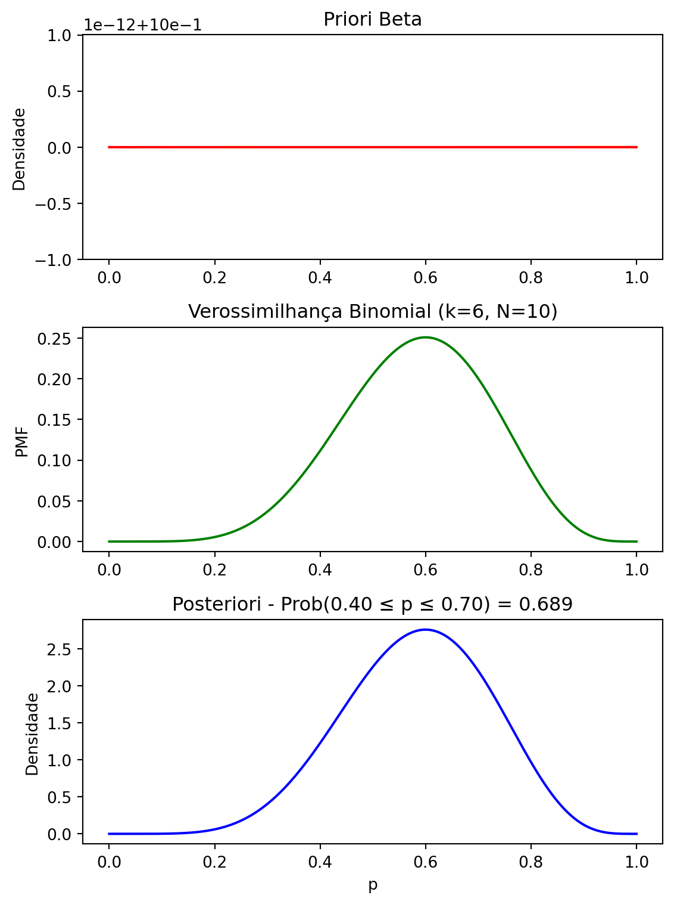

Introdução ao conceito de aproximação por grid na abordagem bayesiana.
A estratégia de inferência via grid consiste em discretizar o parâmetro \(p\) em pequenos intervalos, avaliando a distribuição a priori e a verossimilhança em cada ponto da grade. Em seguida, multiplica-se esses valores e normaliza-se o resultado para obter a distribuição a posteriori.
1 Aproximação Bayesiana via Grid
Definir os dados
\(N\): número total de observações (ensaios Bernoulli).
\(k\): número de sucessos observados.
Criar a malha (grid) de valores para \(p\)
Divida o intervalo \([0, 1]\) em muitos pontos (ex. 1000 pontos).
Cada ponto será uma hipótese para o valor de \(p\).
Avaliar a priori
Escolha uma forma para a distribuição a priori de \(p\).
Exemplos: uma Beta(\(\alpha, \beta\)) ou mesmo uma priori uniforme.
Calcule a densidade da priori em cada ponto do grid.
Calcular a verossimilhança
Para cada valor de \(p\) no grid, calcule \(P(Y = k \mid p, N)\) usando a distribuição Binomial: \[\mathcal{L}(p) = \binom{N}{k}\, p^k (1-p)^{N-k}.\]
Use por exempo o método binom.pmf(k, N, p) do módulo SciPy ou escreva a fórmula manualmente.
Combinar priori e verossimilhança
A posteriori não normalizada em cada ponto do grid é: \[\text{posterior}_{\text{unnorm}}(p) = \text{prior}(p) \times \mathcal{L}(p).\]
Normalizar a posteriori
Some os valores de \(\text{posterior}_{\text{unnorm}}(p)\) sobre todos os pontos \(p\).
Divida cada valor pela soma total (use integração, como scipy.integrate.simpson para maior precisão).
O resultado é a distribuição a posteriori discreta (aproximada).
Calcular probabilidades de intervalo
Para calcular \(P(x_1 \leq p \leq x_2)\), some (ou integre) os valores da posteriori nos pontos entre \(x_1\) e \(x_2\).
Visualizar os resultados
Faça gráficos do perfil da priori, da verossimilhança e da posteriori ao longo do grid de \(p\).
Destaque intervalos de interesse (\(x_1, x_2\)) e use os valores de probabilidade para estimar o valor de \(p\).
2 Exemplo em Python
A seguir, um exemplo completo usando numpy e matplotlib para ilustrar cada etapa. Ajuste os valores de \(N\), \(k\), \(\alpha\) e \(\beta\) conforme necessário.
import numpy as npimport matplotlib.pyplot as pltfrom scipy.stats import binom, betafrom scipy.integrate import simpson# Parâmetros do experimentoN =10# número total de ensaiosk =6# número de sucessos observados# Parâmetros da priori Betaalpha_param =1beta_param =1# Grid de p (1000 pontos entre 0 e 1)p_grid = np.linspace(0, 1, 1000)# 1) Prior: densidade Beta em cada ponto do gridprior = beta.pdf(p_grid, a=alpha_param, b=beta_param)# 2) Verossimilhança: Binomial(k | N, p)likelihood = binom.pmf(k, N, p_grid)# 3) Posterior não normalizadaposterior_unnorm = prior * likelihood# 4) Normaliza para obter a posteriori propriamente ditaarea = simpson(y=posterior_unnorm, x=p_grid) # integra usando Simpsonposterior = posterior_unnorm / area# 5) (Opcional) Calcular probabilidade de um intervalo [x1, x2]x1, x2 =0.4, 0.7mask_interval = (p_grid >= x1) & (p_grid <= x2)prob_interval = simpson(y=posterior[mask_interval], x=p_grid[mask_interval])# Visualizarfig, axs = plt.subplots(3, 1, figsize=(6, 8))# Plot da Prioraxs[0].plot(p_grid, prior, color='red')axs[0].set_title("Priori Beta")axs[0].set_ylabel("Densidade")# Plot da Verossimilhançaaxs[1].plot(p_grid, likelihood, color='green')axs[1].set_title(f"Verossimilhança Binomial (k={k}, N={N})")axs[1].set_ylabel("PMF")# Plot da Posterioraxs[2].plot(p_grid, posterior, color='blue')axs[2].set_title(f"Posteriori - Prob({x1:.2f} ≤ p ≤ {x2:.2f}) = {prob_interval:.3f}")axs[2].set_xlabel("p")axs[2].set_ylabel("Densidade")plt.tight_layout()plt.show()

3 Interpretação
Observe como a forma da posteriori (curva azul) é proporcional ao produto da priori (vermelho) pela verossimilhança (verde).
Se a priori for \(Beta(1,1)\) (uniforme), a posteriori fica essencialmente guiada pelos dados.
Alterar \(\alpha\) e \(\beta\) faz a priori pesar mais (ou menos) no resultado final, dependendo de quão informativa ela é e do tamanho amostral \(N\).